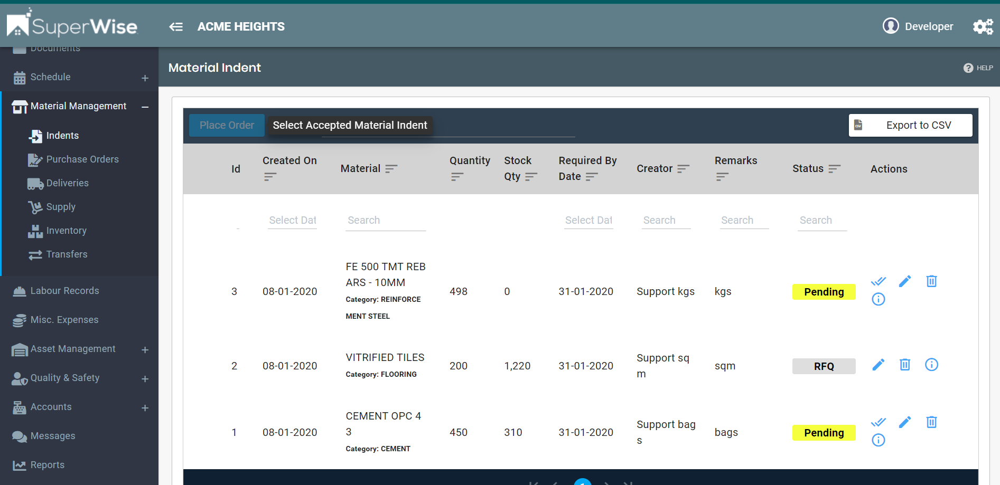
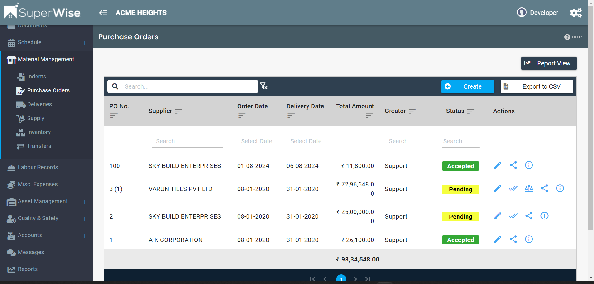
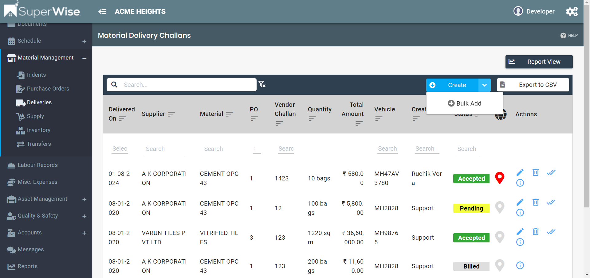

Welcome to SuperWise Solutions Private Limited! We're excited to have you onboard and are committed to ensuring a seamless experience. As the leading construction management software, SuperWise helps contractors, developers, and consultants efficiently monitor and manage projects with real-time collaboration and transparency.
To get started, you can begin managing your materials, orders, and deliveries through the SuperWise platform. Once logged in, you’ll have access to everything you need, including:
The first step in managing your construction materials is raising a material indent. This is where you can list the required materials, search, and place orders. Additionally, you can export the indent data to a CSV file for better tracking.
Here’s how the Material Indent page looks:
Table Overview: The table includes details such as material ID, quantity required, stock available, required by date, and the status of the request. You can also filter the records by date or search for specific materials.
After the material indent is processed, a purchase order (PO) is generated for suppliers. This page allows you to view and manage POs, search through them, and export data for better purchase tracking.
Here’s how the Purchase Order page looks:
Table Overview: The PO table lists details such as the supplier, order date, delivery date, total amount, and the status of the order. Use the search functionality to locate specific POs or export the data as needed.
Once the materials have been delivered, they are logged in the Material Delivery section. Here, you can track all deliveries, including the supplier, materials, delivery vehicle, and the quantity received.
Here’s how the Material Delivery page looks:
Table Overview: The table displays information such as the delivery date, supplier, material name, PO number, quantity delivered, total cost, and the delivery status. Use the search function to filter records or export data to CSV.
If you need further assistance or have any questions, please don’t hesitate to reach out to our customer success team. We're here to ensure you get the most out of SuperWise!
Best regards,
Customer Success Team
SuperWise Solutions Private Limited